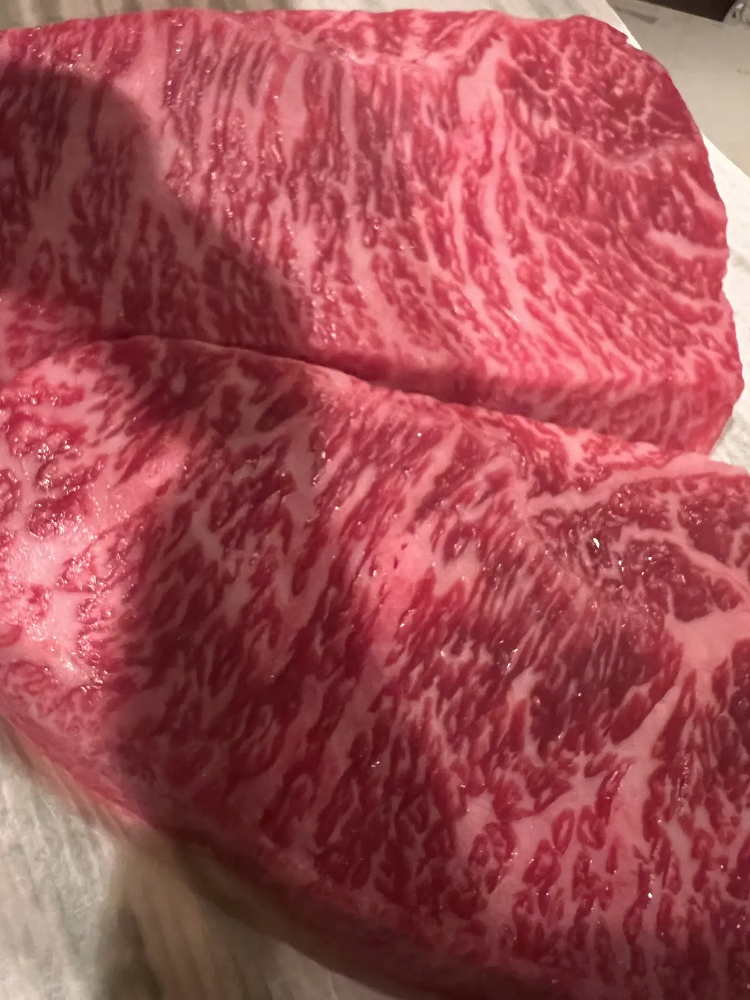

どんな料理が食べられますか？
旬魚、馬刺し、黒毛和牛、季節の酒肴など。和食をベースに自由な発想を加え、その日の仕入れに合わせて内容が変わります。
料理・酒を見る →18:00開店最終入店 23:00

SPECIAL EVENT · 2026.10.24
京都・丸太町の和食小料理「饗応 元」で、イタリアンをテーマにした特別企画を開催します。
料理内容・料金・ご来店時間などの詳細は、お電話でお問い合わせください。ご予約の際は「10月24日のイタリアン会」とお伝えください。
電話で予約・問い合わせ：075-600-0511 →SAKE JOURNAL
2026年10月12日掲載の記事で、風の森 奈々露657と義侠 山田錦60% 純米生原酒を写真とともにご紹介しています。
2026年10月12日の記録。 記事内の価格と分類は掲載日時点の情報です。現在のご用意については店頭またはお電話でご確認ください。
10月12日の日本酒記事を見る →SAKE COMICS
ふっくるとはじめ先生と一緒に、生酒・原酒・無濾過・無濾過生原酒・火入れ・生貯蔵酒と生詰酒・三段仕込み・精米歩合・純米酒の言葉を漫画で。気になるテーマから読めます。
日本酒のラベルを、もう少し身近に。1テーマ3枚ずつ、スマートフォンでも読める漫画にまとめました。
日本酒漫画を読む →FIRST VISIT
初めての方にも分かりやすいよう、店の特徴と予約方法を短くまとめました。
旬魚、馬刺し、黒毛和牛、季節の酒肴など。和食をベースに自由な発想を加え、その日の仕入れに合わせて内容が変わります。
料理・酒を見る →ウイスキー・焼酎・ワインなどもあります。日本酒は酒匠の店主に相談できます。銘柄やご用意は店頭でお確かめください。
料理・酒を見る →できます。お席のみの予約も承ります。予約なしの最終入店は23:00です。23:00までの電話予約なら、アラカルトで営業状況に応じて最長翌2:00まで対応します。コースはご来店日の2日前までにご予約ください。
予約方法を見る →18:00開店、最終入店は23:00です。23:00までの電話予約等で、ご予約・営業状況に応じて最長翌2:00まで対応します。
店舗情報を見る →丸太町で一杯飲みたい方へ。 饗応 元は、日本酒に限らずウイスキー・焼酎・ワインなども選べる和食小料理店です。軽いアテと一杯からお楽しみいただけます。
お酒の案内を見る →FOOD & SAKE
京都の旬と、全国から選ぶこだわりの食材。和食の技を軸にしながら、枠にとらわれない組み合わせで、その日の一皿を仕立てます。アラカルトで一品から、コースで料理の流れを味わう夜まで。過ごし方は自由です。



軽いアテと一杯から、しっかり夕食まで。20:30〜22:30からのご利用もどうぞ。
唎酒師・焼酎唎酒師の上位資格「酒匠」。 香りや味わいを見極め、温度、酒器、料理との相性まで考えて、その方に合う一杯を組み立てます。
饗応 元では、銘柄の知名度だけに頼らず、「今の一皿に合うか」「今日の気分に寄り添うか」を大切にご提案します。
酒匠について詳しく見る →RESERVATION & ACCESS
アラカルトのお席のみ・コースとも電話でご予約いただけます。WEBではお席のみ、または掲載中のコースを選べます。当日や遅い時間のご相談はお電話ください。
電話、または「お席のみWEB予約」から。予約なしの最終入店は23:00です。23:00までの電話予約なら、アラカルトで営業状況に応じて最長翌2:00まで対応します。
電話、または「コースWEB予約」から掲載中のコースをお選びください。仕入れと仕込みのため、ご来店日の2日前までにご予約ください。
23:00までの電話予約等で、ご予約・営業状況に応じて最長翌2:00まで対応します。